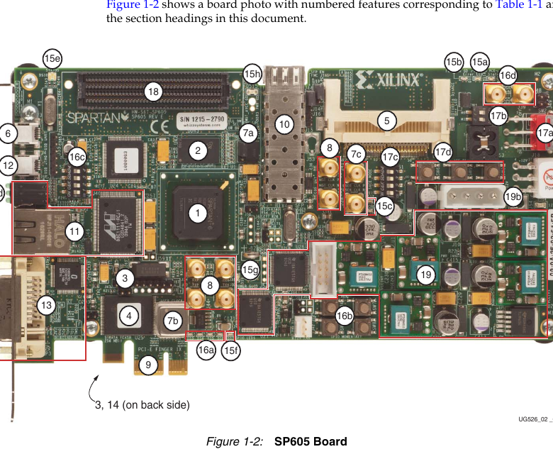

Для поиска конкретного вывода откройте интерактивный навигатор.
1. Назначение и основные компоненты
SP605 — отладочная плата для проектов на Spartan-6 LXT. Она подходит для цифровой логики, интерфейсов, обработки данных и высокоскоростных последовательных каналов.
- FPGA XC6SLX45T-3FGG484.
- 128 МБ DDR3.
- USB-JTAG и отдельный USB-UART CP2103.
- Генераторы 27 МГц и 200 МГц.
- Ethernet, PCIe, SFP, DVI, FMC LPC и SMA.
2. Маркировка FPGA
| Часть | Значение |
|---|---|
| XC6S | Семейство Spartan-6 |
| LX45T | LXT-устройство с GTP-трансиверами |
| -3 | Speed grade |
| FGG484 | Бессвинцовый BGA-корпус, 484 шара |
Обозначения B21, AB13 и F5 — координаты шаров корпуса FPGA, а не номера контактов внешнего разъёма.
3. Конфигурирование и USB-JTAG
Загрузка через JTAG временная: после выключения питания FPGA очищается. Для теста это самый простой способ.
- Соберите проект и получите
.bit. - Откройте iMPACT → Boundary Scan.
- Initialize Chain.
- Назначьте FPGA новый
.bit. - Выполните Program.
4. Тактовые источники
| Источник | Частота | Пины | Комментарий |
|---|---|---|---|
| X2 USER_CLOCK | 27 МГц | AB13 | Однотактный генератор |
| U6 SYSCLK | 200 МГц | K21/K22 | Дифференциальный LVDS |
| SMA clock | Внешняя | M20/M19 | Дифференциальный вход |
NET "clk" LOC = "AB13"; NET "clk" TNM_NET = "clk"; TIMESPEC "TS_clk" = PERIOD "clk" 37.037 ns HIGH 50%;
CLK_FREQ в UART должен совпадать с реальной частотой clk.5. USB-UART CP2103
| Пин | Имя сети | Направление | Назначение |
|---|---|---|---|
| B21 | USB_1_RX | FPGA → ПК | TX FPGA, вход RX CP2103 |
| H17 | USB_1_TX | ПК → FPGA | RX FPGA, выход TX CP2103 |
| F18 | USB_1_CTS | FPGA → CP2103 | Flow control |
| F19 | USB_1_RTS | CP2103 → FPGA | Flow control |
115200 бод 8 бит данных Без чётности 1 стоповый бит Flow control: None Режим отображения: HEX
6. Память
| Устройство | Назначение |
|---|---|
| DDR3 128 МБ | Оперативная память, обычно через MCB/MIG |
| SPI x4 Flash | Последовательное хранение конфигурации/данных |
| BPI Flash | Параллельная Flash |
| System ACE CF | Загрузка образов с CompactFlash |
Для текущего теста UART внешняя память не требуется.
7. LED, кнопки и DIP
Светодиоды — активный высокий уровень
| Пин | LED |
|---|---|
| D17 | DS3 / LED0 |
| AB4 | DS4 / LED1 |
| D21 | DS5 / LED2 |
| W15 | DS6 / LED3 |
Кнопки — при нажатии логическая 1
| Пин | Кнопка |
|---|---|
| F3 | SW4 |
| G6 | SW7 |
| F5 | SW5 |
| C1 | SW8 |
| H8 | CPU_RESET / SW6 |
DIP S2
| Пин | Переключатель |
|---|---|
| C18 | S2.1 |
| Y6 | S2.2 |
| W6 | S2.3 |
| E4 | S2.4 |
8. Разъём J55
| Пин FPGA | Сеть | Контакт J55 |
|---|---|---|
| G7 | GPIO_HEADER_0 | 1 |
| H6 | GPIO_HEADER_1 | 2 |
| D1 | GPIO_HEADER_2 | 3 |
| R7 | GPIO_HEADER_3 | 4 |
| — | GND | 5 |
| — | 3.3 В | 6 |
9. Другие интерфейсы
| Интерфейс | Для чего |
|---|---|
| Ethernet | 10/100/1000 Мбит/с, требуется MAC/IP-core |
| PCI Express | x1 Gen1 через GTP |
| SFP | Оптический/электрический высокоскоростной канал |
| DVI | Цифровое видео |
| FMC LPC | Мезонинные платы, VADJ 2.5 В |
10. Питание и I/O-банки
Выходные уровни определяются питанием VCCO соответствующего банка. Выбранный IOSTANDARD должен совпадать с напряжением банка и подключённой периферии.
- Не переставляйте перемычки при включённой плате.
- Не подавайте 5 В напрямую на FPGA I/O.
- Проверяйте схему перед подключением внешних модулей.
11. UCF в Xilinx ISE
UCF — обычный текстовый файл, связывающий порты top module с физическими пинами.
NET "clk" LOC = "AB13"; NET "reset" LOC = "F5"; NET "led" LOC = "AB4"; NET "uart_tx" LOC = "B21"; NET "clk" TNM_NET = "clk"; TIMESPEC "TS_clk" = PERIOD "clk" 37.037 ns HIGH 50%;
- Project → New Source → Implementation Constraints File.
- Имена должны совпадать с портами Verilog.
- После изменения UCF заново выполните Implement Design и Generate Programming File.
12. Проверка байта синхронизации
Ожидаемый бинарный поток:
A5 00 00 00 00 01 00 01 00 02 00 02 00 ... 7F 00 7F 00 A5 ...
Между маркерами передаётся 128 × 4 = 512 байт данных. Байт A5 смотрите в HEX-режиме.
13. Частые проблемы
| Симптом | Проверка |
|---|---|
| Нет UART | uart_tx должен быть B21, кабель подключён к J23 |
| Мусор | CLK_FREQ, частота AB13 и 115200 8N1 |
| A5 не видно | Терминал должен показывать HEX |
| UCF не сработал | Пересоберите Implement и Generate Programming File |
| Warning про constant/trimmed | Обычно нормальная оптимизация, главное — отсутствие Errors |